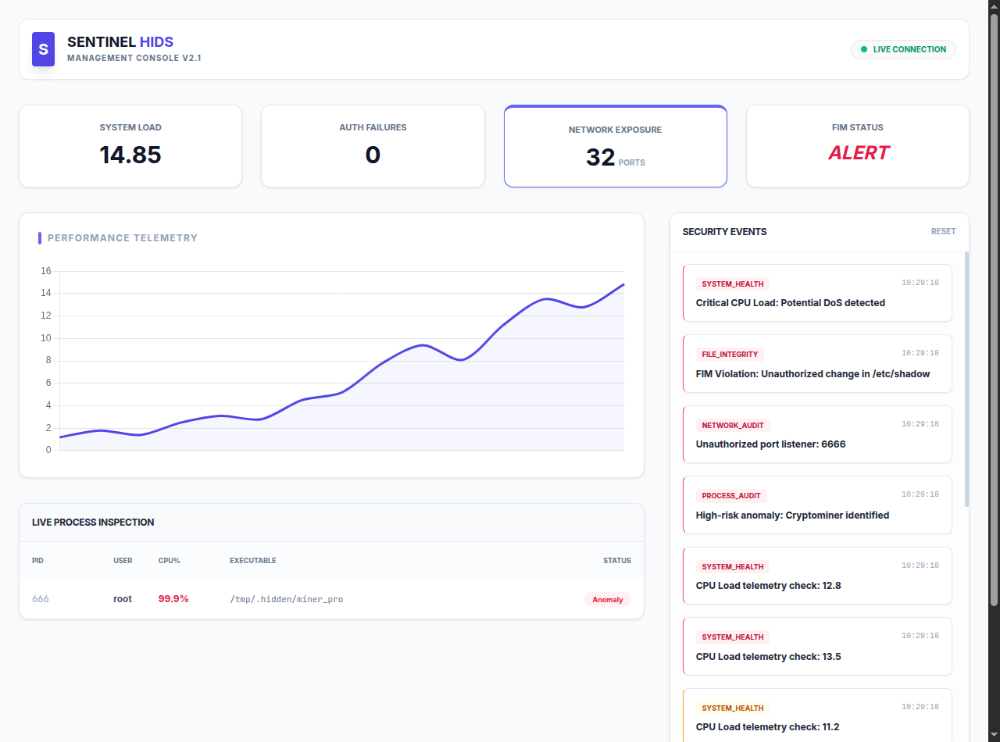
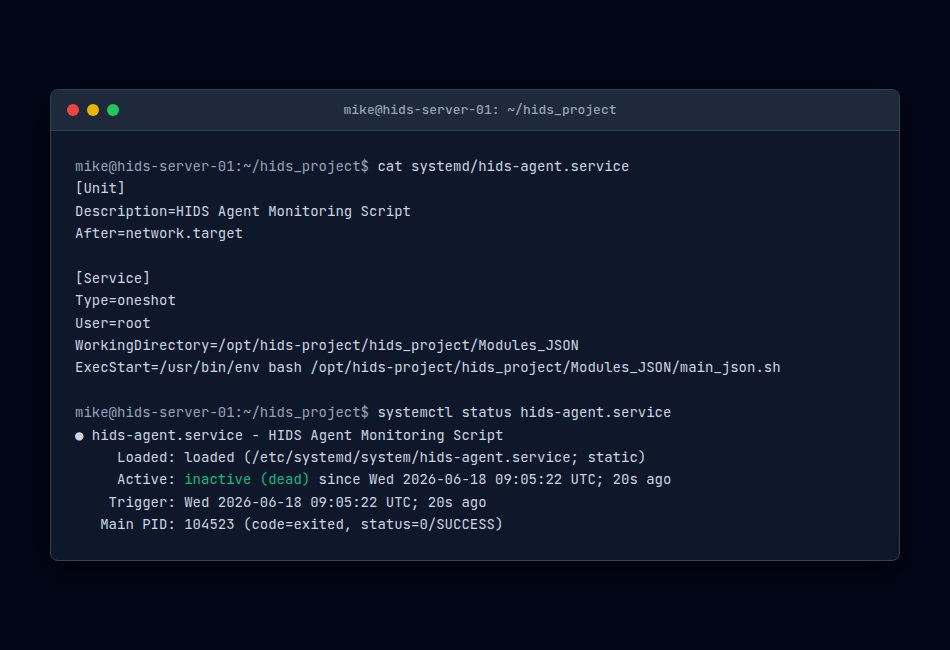

Concept du Projet & Comparaison avec les HIDS Standards
Les systèmes de détection d'intrusions hôte (HIDS) comme Wazuh ou OSSEC sont des outils défensifs puissants, mais ils nécessitent des bases de données lourdes, des gestionnaires centralisés et une mémoire système conséquente. Cette empreinte les rend inadaptés pour les micro-instances cloud à faibles ressources, les conteneurs Docker ou les passerelles IoT minimales.
Le Système de Détection d'Intrusions Hôte (HIDS) est un agent de surveillance modulaire et sans dépendance. Écrit en Bash et en Python, il opère directement sur les ressources du système hôte et génère des alertes JSON structurées :
- Audit POSIX natif : S'appuie exclusivement sur des appels système et commandes Unix natifs.
- Audit proactif des chemins d'accès : Signale l'exécution depuis les répertoires temporaires et traque les usurpations de noms de processus.
- Boucles d'intégrité compactes : Surveille les fichiers d'authentification critiques contre toute modification non autorisée.

Durcissement Système & Optimisations des Ressources
L'exécution en continu d'un agent d'audit sur des machines de production nécessite de minimiser les cycles CPU et les accès disque (I/O) :
> 1. Empreinte Zéro Dépendance (Commandes POSIX)
L'agent est conçu pour s'exécuter sur des distributions Linux minimales, utilisant des utilitaires POSIX intégrés (comme ps, ss, et readlink).

> 2. Intégration Sécurisée dans Systemd
Les modules sont packagés sous forme de démons gérés par systemd (avec ProtectSystem=full et PrivateTmp=true).
> 3. FIM (File Integrity Monitoring) Économe en I/O
Le démon FIM calcule les empreintes et surveille uniquement les fichiers sensibles (comme /etc/passwd et /etc/shadow).
Architecture Logicielle et Code
# Trace and validate executables
ps -eo pid,user,comm,%cpu,%mem --no-headers | while read pid user comm cpu mem; do
exe=$(readlink -f /proc/$pid/exe 2>/dev/null)
[ -z "$exe" ] && continue
# Flag execution from transient paths
if echo "$exe" | grep -qE "/tmp|/dev/shm|/var/tmp"; then
msg="Process $comm (PID $pid) executing from transient directory: $exe"
write_alert "CRITICAL" "$msg"
fi
doneRéférence des Commandes & Logs
systemctl start hids-audit.service — Démarre le démon HIDS.
tail -f /var/log/hids/alerts.json — Affiche le flux d'alertes JSON structurées.